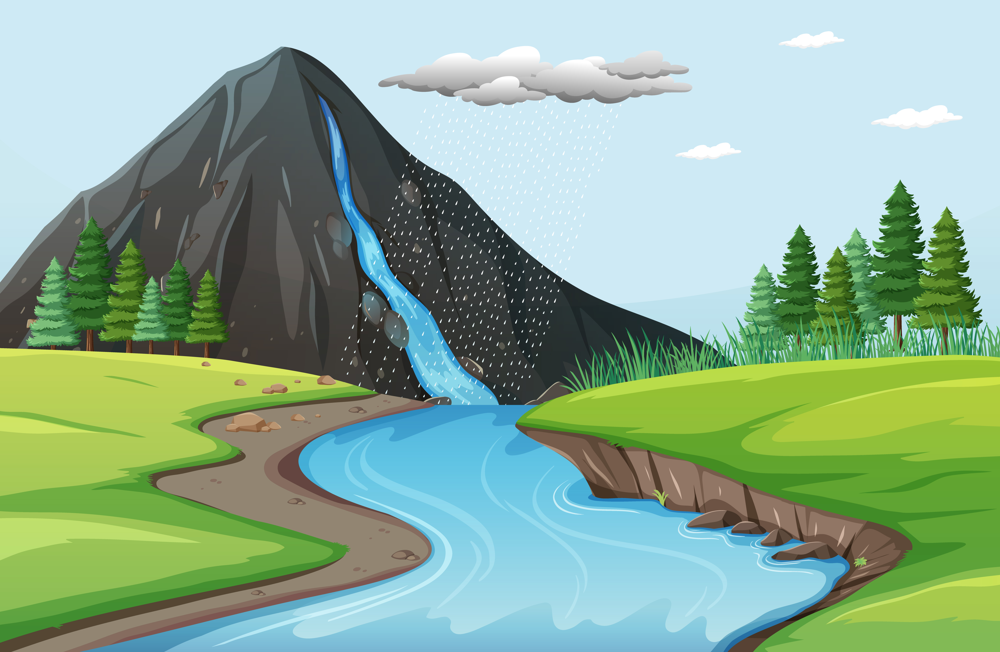

«Ты можешь быть у неё не первым, не последним и не единственным. Она любила перед тем, как полюбила снова. Но если она любит тебя сейчас, что ещё не так? Она не идеальна, но ведь ты тоже, и вы оба никогда не будете идеальными вместе. Но если она заставляет тебя смеяться, тем более подумай дважды, если она даёт тебе возможность быть человеком, делать ошибки, держаться за неё и давать ей всё, что ты можешь. Она может думать о тебе не каждую секунду в день, но она может отдать тебе часть себя, потому что она знает — ты можешь разбить её сердце. Так не рань её, не меняй её, не анализируй и не ожидай от неё того, что выше её возможностей. Улыбайся, когда она делает тебя счастливым, давай ей знать, когда она тебя злит, и скучай по ней, когда её нет рядом…..»
Боб Марли

Любовь — это наркотик. Поначалу возникает эйфория, легкость, чувство полного растворения. На следующий день тебе хочется еще. Ты пока не успел втянуться, но, хоть ощущения тебе нравятся, ты уверен, что сможешь в любой момент обойтись без них. Ты думаешь о любимом существе две минуты и на три часа забываешь о нем. Но постепенно ты привыкаешь к нему и попадаешь в полную от него зависимость. И тогда ты думаешь о нем три часа и забываешь на две минуты, Если его нет рядом, ты испытываешь то же, что наркоман, лишенный очередной порции зелья. И в такие минуты, как наркоман, который ради дозы способен пойти на грабеж, на убийство и на любое унижение, ты готов на все ради любви. Я знаю, что такое любовь: это когда я, полностью растворившаяся в чем-то еще малознакомом, сладкая дрожь по всему телу от простого прикосновения, беспрерывные телефонные звонки и смски, состояние уверенности в себе, растрепанные волосы по утрам, голос, от которого по всему телу мурашки…

Все будет збс